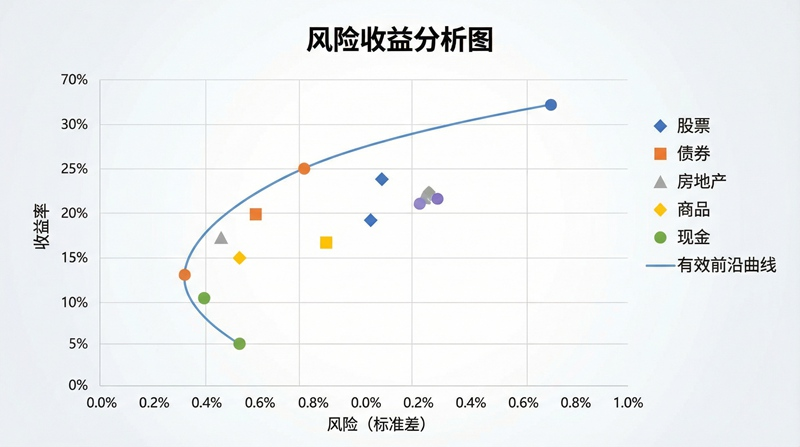

振动基础
市场波动的振动规律与周期分析
⏱️ 约35分钟
金融市场价格波动呈现明显的振动特征。从周期分析到趋势判断，从技术指标到风险管理， 振动理论为投资分析提供了新的视角。理解市场波动的规律，有助于把握投资时机。
价格波动的振动分析
股价、汇率、商品价格都呈现周期性波动。理解这些振动的频率、振幅和周期， 有助于预测市场走势。技术分析中的许多指标本质上都是振动分析工具。

股市周期的振动规律
市场波动的周期性特征：
- 基钦周期：3-4年的库存周期，影响短期波动。对应企业的库存调整周期
- 朱格拉周期：9-10年的投资周期，影响中期趋势。对应设备更新和资本支出周期
- 康波周期：50-60年的技术周期，影响长期走势。对应重大技术革命周期
- 共振效应：多个周期叠加产生大级别行情。多个周期底部重合时是最佳买入时机
市场阻尼与减震机制
市场有自我调节机制，如同阻尼振动系统。涨跌停板、熔断机制、央行干预都是市场阻尼的表现， 它们的作用是防止市场过度波动，维持系统稳定。

市场稳定机制分析
各国市场的阻尼设计：
- 涨跌停板：限制单日波动幅度，A股为±10%，ST股为±5%。防止恐慌性抛售
- 熔断机制：极端行情暂停交易，给市场降温。但可能加剧恐慌，需要谨慎使用
- 央行干预：通过货币政策调节市场流动性。降息降准释放流动性，加息缩表收紧
- 程序化交易：算法交易可能放大或抑制波动。高频交易增加流动性但也可能加剧波动
共振与泡沫形成
当外力的频率与系统的固有频率接近时，会发生共振，振幅急剧增大。 在金融市场中，这种共振效应表现为资产泡沫的形成和破裂。
资产泡沫的「共振机制」
理解共振有助于识别泡沫风险：
- 正反馈循环：价格上涨吸引更多买家，进一步推高价格，形成正反馈
- 羊群效应：投资者跟风行为放大了市场波动，如同共振放大振幅
- 杠杆加速：杠杆资金的使用放大了共振效应，加速泡沫形成
- 破裂时刻：当没有新的资金进入时，共振停止，泡沫破裂，价格暴跌
课程总结
恭喜完成赚钱理财系列的全部6门课程！通过这6节课，我们从静力学的平衡概念学习到资产配置， 从运动学的轨迹分析理解价格走势，从动力学的力与运动关系洞察市场驱动因素， 从能量方法优化投资效率，从振动基础把握市场周期。
理论力学不仅是物理学的基础，也是理解金融市场的有力工具。希望这些知识能帮助你在投资道路上走得更稳更远。